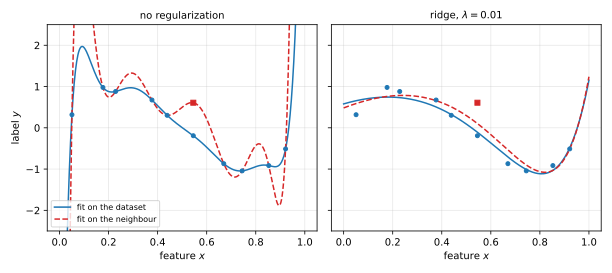

13 Private Empirical Risk Minimization
Most of machine learning fits a model by minimizing its average loss on a training set. This chapter asks how to do that under differential privacy (DP) when the loss is convex. Noise can enter at three places: in the output of a non-private solver, in the objective that the solver minimizes, or in each step of gradient descent. The chapter proves a privacy guarantee for each, and an accuracy guarantee for the third, which is the method that the next chapter scales to neural networks.
13.1 Empirical risk minimization
Each record \(z = (x, y)\) is a pair of a feature vector \(x\) and a label \(y\). The dataset \(X = (z_1, \dots, z_n)\) holds \(n\) records.
A model is described by a parameter vector \(\theta\) in \(\mathbb R^d\). A loss function \(\ell(\theta; z)\) measures how badly the model \(\theta\) fits the record \(z\).
Definition 13.1 (Empirical risk minimization) Let \(C \subseteq \mathbb R^d\) be a nonempty, closed, convex set of allowed parameters. The empirical risk of \(\theta\) on \(X\) is the total loss
\[ \mathcal L(\theta; X) = \sum_{i=1}^n \ell(\theta; z_i), \tag{13.1}\]
and \(\theta^* \in C\) denotes a minimizer of \(\mathcal L(\cdot\,; X)\) over \(C\). An algorithm that outputs \(\hat\theta \in C\) has excess empirical risk \(\mathbb E[\mathcal L(\hat\theta; X)] - \mathcal L(\theta^*; X)\), where the expectation is over the algorithm’s coins only. The dataset is fixed.
The problem is called empirical risk minimization (ERM). In practice one cares about the loss on new data from the same distribution, which is generalization. Where a uniform convergence argument applies, a good empirical minimizer also generalizes, so this chapter studies the empirical problem only. A model \(\theta\) comes with a predictor, such as \(x \mapsto \langle x, \theta\rangle\) for linear regression, which the chapter does not need.
In this generality the problem is hopeless, so three assumptions are made throughout. They use the following terms.
Definition 13.2 (Diameter, convexity, Lipschitz continuity)
- The diameter of \(C\) is \(\|C\|_2 = \sup_{\theta, \theta' \in C}\|\theta - \theta'\|_2\).
- A function \(f\) on a convex set \(K\) is convex if \(f(t\theta + (1-t)\theta') \le t f(\theta) + (1-t)f(\theta')\) for all \(\theta, \theta' \in K\) and \(t \in [0,1]\).
- A function \(f\) on \(K\) is \(L\)-Lipschitz if \(|f(\theta) - f(\theta')| \le L\|\theta - \theta'\|_2\) for all \(\theta, \theta' \in K\).
- A vector \(g\) is a subgradient of a convex \(f\) at \(\theta\) if \(f(\theta') \ge f(\theta) + \langle g, \theta' - \theta\rangle\) for all \(\theta'\). Where \(f\) is differentiable, its gradient \(\nabla f(\theta)\), the vector of partial derivatives, is the only subgradient.
The assumptions are that \(C\) has finite diameter, and that for every record \(z\) the loss \(\theta \mapsto \ell(\theta; z)\) is convex and \(L\)-Lipschitz on \(\mathbb R^d\). A convex function that is finite on all of \(\mathbb R^d\) has a subgradient at every point, and we write \(\nabla\ell(\theta; z)\) for a gradient, or a subgradient where \(\ell\) is not differentiable. Lipschitz continuity matters to privacy because it bounds every gradient, and so the effect of one record on a gradient step.
Lemma 13.1 If a convex function \(f\) is \(L\)-Lipschitz on \(\mathbb R^d\), then every subgradient \(g\) of \(f\) satisfies \(\|g\|_2 \le L\).
Proof.
- Suppose \(g \ne 0\), take any point \(\theta\), and set \(u = g/\|g\|_2\). The definition of a subgradient at \(\theta' = \theta + u\) gives \(f(\theta + u) - f(\theta) \ge \langle g, u\rangle = \|g\|_2\).
- The Lipschitz condition gives \(f(\theta+u) - f(\theta) \le L\|u\|_2 = L\). Together, \(\|g\|_2 \le L\).
Example 13.1 (Common losses) Take \(x, \theta \in \mathbb R^d\).
- Linear regression, \(y \in \mathbb R\): the squared loss \(\ell(\theta; x, y) = (\langle x, \theta\rangle - y)^2\). It is convex, and Lipschitz only on bounded sets.
- Logistic regression, \(y \in \{-1, 1\}\): \(\ell(\theta; x, y) = \ln\big(1 + e^{-y\langle x, \theta\rangle}\big)\). Its gradient is \(-y\,x/(1 + e^{y\langle x,\theta\rangle})\), of norm at most \(\|x\|_2\), so it is \(\|x\|_2\)-Lipschitz.
- Geometric median, no label: \(\ell(\theta; x) = \|\theta - x\|_2\). By the triangle inequality it is \(1\)-Lipschitz. In one dimension it is \(|\theta - x|\), and its minimizer is the median. The squared version \(\|\theta - x\|_2^2\) is minimized by the mean.
- Support vector machine (SVM), \(y \in \{-1, 1\}\): the hinge loss \(\ell(\theta; x, y) = \max(0, 1 - y\langle x, \theta\rangle)\). It is a maximum of two functions that are linear in \(\theta\), so it is convex and \(\|x\|_2\)-Lipschitz.
Other assumptions, such as strong convexity of the loss or smoothness, give faster rates, but they are not needed here. The non-private problem is a convex optimization problem, and until Section 13.5 we treat the solver as a black box.
13.2 Why the minimizer is not private
Releasing an exact minimizer can reveal records outright. The median is the simplest case.
Proposition 13.1 Let \(d = 1\), \(\ell(\theta; x) = |\theta - x|\), records in \([-R, R]\) with \(R > 0\), \(C = [-R, R]\), and \(n\) odd. Then the empirical risk has a unique minimizer, the median \(x_{(m)}\) with \(m = (n+1)/2\), where \(x_{(1)} \le \dots \le x_{(n)}\) are the sorted records. The algorithm that outputs it is not \((\varepsilon,\delta)\)-DP for any \(\varepsilon\) and any \(\delta < 1\).
Proof.
- Away from the records, the function \(\theta \mapsto \sum_i |\theta - x_i|\) has slope equal to the number of records below \(\theta\) minus the number above. For \(\theta < x_{(m)}\) at least \(m\) records lie above, so the slope is at most \((m-1) - m = -1\). For \(\theta > x_{(m)}\) the slope is at least \(1\) in the same way. The function is continuous, so \(x_{(m)}\) is its unique minimizer.
- On the dataset with every record equal to \(-R\) the output is \(-R\), and on the dataset with every record equal to \(R\) it is \(R\). A path of \(n\) replacements joins the two datasets, so some neighbours \(X \sim X'\) have different outputs \(v \ne v'\).
- The algorithm is deterministic. For the event \(T = \{v\}\) this gives \(\Pr[M(X) \in T] = 1\) and \(\Pr[M(X') \in T] = 0\), and \(1 \le e^\varepsilon \cdot 0 + \delta\) fails for every \(\delta < 1\).
The same happens for support vector machines. With separable data, the solution of maximum margin is a combination of the few records closest to the separating hyperplane, the support vectors. One added record close to that hyperplane becomes a support vector and can move the solution far.
One way out is input perturbation: privatize each record, then run any non-private algorithm, which is private by post-processing. Randomizing each record separately is local differential privacy, which needs far more data for the same accuracy, so we do not pursue it. The three methods below add noise after the data has been pooled.
13.3 Output perturbation
The obvious method computes the minimizer and adds noise scaled to its sensitivity. As Proposition 13.1 shows, the minimizer itself can have large sensitivity, and the fix is regularization.
Polynomial regression shows the problem. With records \((x_i, y_i) \in \mathbb R^2\) and the squared loss \(\ell(\theta; x, y) = \big(\sum_{j=0}^{k}\theta_j x^j - y\big)^2\), the model is a polynomial of degree \(k\). If the degree is not known in advance and is set as high as \(k = n - 1\), then for distinct features the minimizer passes through every point. Its excess risk is zero, but it fits new data poorly and swings wildly when one point moves. These are two views of the same instability, as the left panel of Figure 13.1 shows.
Regularization adds a penalty that favours simple models. For a function \(N\) of the parameters alone, called the regularizer, and a weight \(\lambda > 0\), the regularized objective is
\[ F_X(\theta) = \mathcal L(\theta; X) + \lambda N(\theta). \tag{13.2}\]
At \(\lambda = 0\) there is no regularization, and as \(\lambda \to \infty\) the data is ignored. The usual choice is \(N(\theta) = \tfrac12\|\theta\|_2^2\). Its effect on sensitivity follows from strong convexity.
Definition 13.3 (Strong convexity) For \(\mu > 0\), a function \(f\) on a convex set \(K\) is \(\mu\)-strongly convex if, for all \(\theta, \theta' \in K\) and \(t \in [0,1]\),
\[ f(t\theta + (1-t)\theta') \le t f(\theta) + (1-t) f(\theta') - \frac\mu2\, t(1-t)\,\|\theta - \theta'\|_2^2 . \tag{13.3}\]
The function \(\tfrac12\|\theta\|_2^2\) is \(1\)-strongly convex, with equality, by the identity \(t\|a\|^2 + (1-t)\|b\|^2 - \|ta + (1-t)b\|^2 = t(1-t)\|a - b\|^2\). A \(\mu\)-strongly convex function plus a convex function is \(\mu\)-strongly convex. A strongly convex function grows at least quadratically away from its minimizer.
Lemma 13.2 Let \(f\) be \(\mu\)-strongly convex on a convex set \(K\), with a minimizer \(\hat\theta\) over \(K\). Then for every \(\theta \in K\),
\[ f(\theta) - f(\hat\theta) \ge \frac\mu2\|\theta - \hat\theta\|_2^2 . \tag{13.4}\]
In particular, the minimizer is unique.
Proof.
- For \(t \in (0, 1)\), the point \(\hat\theta + t(\theta - \hat\theta)\) lies in \(K\), so its value is at least \(f(\hat\theta)\).
- Strong convexity, applied with weight \(t\) on \(\theta\), bounds that value by \(t f(\theta) + (1-t) f(\hat\theta) - \frac\mu2 t(1-t)\|\theta - \hat\theta\|_2^2\).
- Combining the two and dividing by \(t\) gives \(f(\theta) - f(\hat\theta) \ge \frac\mu2(1-t)\|\theta - \hat\theta\|_2^2\). Letting \(t \to 0\) gives the claim.
- A second minimizer \(\theta\) would have \(f(\theta) - f(\hat\theta) = 0\), which forces \(\theta = \hat\theta\).
Theorem 13.1 (Sensitivity of the regularized minimizer) Let \(C\) be nonempty, closed, convex and bounded. Suppose that for every record \(z\) the loss \(\ell(\cdot\,; z)\) is convex and \(L\)-Lipschitz on \(C\), and that \(N\) is continuous and \(1\)-strongly convex. For each dataset \(X\), let \(\theta_X\) be the minimizer of \(F_X = \mathcal L(\cdot\,; X) + \lambda N\) over \(C\). Then for all neighbours \(X \sim X'\),
\[ \|\theta_X - \theta_{X'}\|_2 \le \frac{2L}{\lambda}. \tag{13.5}\]
Proof.
- \(F_X\) is continuous on the closed bounded set \(C\), so it has a minimizer, and it is \(\lambda\)-strongly convex, so the minimizer is unique by Lemma 13.2. The same holds for \(F_{X'}\).
- Write \(\theta = \theta_X\) and \(\theta' = \theta_{X'}\). Lemma 13.2 applied to each function gives \[ F_X(\theta') - F_X(\theta) \ge \frac\lambda2\|\theta - \theta'\|_2^2, \qquad F_{X'}(\theta) - F_{X'}(\theta') \ge \frac\lambda2\|\theta - \theta'\|_2^2 . \tag{13.6}\]
- Add the two inequalities. The left side becomes \(h(\theta') - h(\theta)\), where \(h = F_X - F_{X'}\), and the right side becomes \(\lambda\|\theta - \theta'\|_2^2\).
- If \(X\) and \(X'\) differ in record \(j\), then \(h(\cdot) = \ell(\cdot\,; z_j) - \ell(\cdot\,; z'_j)\) is a difference of two \(L\)-Lipschitz functions, so \(h(\theta') - h(\theta) \le 2L\|\theta - \theta'\|_2\).
- So \(\lambda\|\theta - \theta'\|_2^2 \le 2L\|\theta - \theta'\|_2\), and dividing by \(\lambda\|\theta - \theta'\|_2\) gives the claim. If \(\theta = \theta'\), there is nothing to prove.
The bound depends on neither \(n\) nor the dimension. With it, the Gaussian mechanism of the approximate DP chapter finishes the job. Take a function whose \(\ell_2\) sensitivity, the largest change in Euclidean norm between neighbours, is some \(\Delta\). The mechanism adds Gaussian noise \(\mathcal N(0, \sigma^2 I_d)\) with standard deviation \(\sigma\) in each coordinate. For every \(\varepsilon > 0\) and \(\delta \in (0,1)\) it is \((\varepsilon, \delta)\)-DP, the relaxation that allows an additive slack \(\delta\), when
\[ \sigma = \frac{\Delta}{\varepsilon}\sqrt{2\ln(1/\delta) + \varepsilon}. \tag{13.7}\]
Theorem 13.2 (Output perturbation) Under the assumptions of Theorem 13.1, let \(\varepsilon > 0\) and \(\delta \in (0,1)\). The algorithm that outputs \(\hat\theta = \theta_X + b\), with \(b \sim \mathcal N(0, \sigma^2 I_d)\) and
\[ \sigma = \frac{2L}{\lambda}\cdot\frac{\sqrt{2\ln(1/\delta) + \varepsilon}}{\varepsilon}, \tag{13.8}\]
is \((\varepsilon, \delta)\)-DP. So is its projection onto \(C\).
Proof. The map \(X \mapsto \theta_X\) has \(\ell_2\) sensitivity at most \(2L/\lambda\) by Theorem 13.1, so the Gaussian mechanism gives the guarantee. The projection is post-processing.

Output perturbation is simple and works with any exact solver. Its accuracy is often weak, because the regularization strength that privacy needs can be far from the one that fits the data best.
13.4 Objective perturbation
The second method adds noise to the objective instead of the output. It minimizes
\[ J_b(\theta) = \mathcal L(\theta; X) + \frac\lambda2\|\theta\|_2^2 + \langle b, \theta\rangle \tag{13.9}\]
for a random vector \(b\), and releases the exact minimizer. The linear term rewards or penalizes each direction of the parameter space by a random amount. With \(b\) Gaussian the result is approximately private. With \(b\) drawn from a density proportional to \(e^{-c\|b\|_2}\), whose norm has a Gamma distribution, it is purely private.
The proof below is for losses of generalized linear form, which covers logistic regression and smoothed versions of the hinge loss. Such a loss is \(\ell(\theta; x, y) = \phi(\langle x, \theta\rangle, y)\), where for each label \(y\) the scalar function \(u \mapsto \phi(u, y)\) is convex and twice continuously differentiable with derivatives \(|\phi'| \le L\) and \(0 \le \phi'' \le \beta\). The features satisfy \(\|x\|_2 \le 1\). Then \(\nabla\ell = \phi'(\langle x,\theta\rangle, y)\,x\) has norm at most \(L\), and the Hessian \(\nabla^2\ell = \phi''(\langle x,\theta\rangle, y)\,xx^\top\) has rank at most one and eigenvalues in \([0, \beta]\). The proof also needs a criterion from the approximate DP chapter, stated in terms of the privacy loss \(\ln\big(p_X(\theta)/p_{X'}(\theta)\big)\), where \(p_X\) is the density of the output on \(X\). If, for every ordered pair of neighbours, the privacy loss at an output drawn from \(M(X)\) exceeds \(\varepsilon\) with probability at most \(\delta\), then \(M\) is \((\varepsilon,\delta)\)-DP.
Theorem 13.3 (Objective perturbation) Let \(C = \mathbb R^d\) and let \(\ell\) be a generalized linear loss as above. Let \(\varepsilon \in (0, 4]\) and \(\delta \in (0,1)\), and set
\[ \lambda \ge \frac{\beta}{e^{\varepsilon/2} - 1}, \qquad \sigma = \frac{4L\big(1 + \sqrt{2\ln(1/\delta)}\big)}{\varepsilon}. \tag{13.10}\]
Then the algorithm that draws \(b \sim \mathcal N(0, \sigma^2 I_d)\) and outputs the exact minimizer \(\hat\theta\) of \(J_b\) is \((\varepsilon, \delta)\)-DP.
Proof.
- The output as a function of the noise. For each \(b\), the function \(J_b\) is continuous and \(\lambda\)-strongly convex on \(\mathbb R^d\), so it has a unique minimizer, where its gradient vanishes. So \(\hat\theta = \theta\) exactly when \(b = g_X(\theta)\), where \(g_X(\theta) = -\nabla\mathcal L(\theta; X) - \lambda\theta\). Every \(\theta\) is the minimizer for the noise \(g_X(\theta)\), and each noise has one minimizer, so \(g_X\) is a bijection of \(\mathbb R^d\) and \(\hat\theta = g_X^{-1}(b)\).
- The density of the output. The map \(g_X\) is continuously differentiable with Jacobian \(-(H_X(\theta) + \lambda I)\), where \(H_X(\theta) = \sum_i \nabla^2\ell(\theta; z_i)\) is positive semidefinite. By the change of variables formula, \(\hat\theta\) has density \[ p_X(\theta) = \varphi_\sigma\big(g_X(\theta)\big)\,\det\big(H_X(\theta) + \lambda I\big), \tag{13.11}\] where \(\varphi_\sigma\) is the density of \(\mathcal N(0,\sigma^2 I_d)\).
- The determinants. Let \(X\) and \(X'\) differ in the last record, \(z = (x, y)\) in \(X\) and \(z' = (x', y')\) in \(X'\). Fix \(\theta\) and write \(A = \sum_{i<n}\nabla^2\ell(\theta; z_i) + \lambda I\), which satisfies \(A \succeq \lambda I\). Then \(H_X + \lambda I = A + a\,xx^\top\) with \(a = \phi''(\langle x,\theta\rangle, y) \in [0,\beta]\). The matrix determinant lemma gives \[ \det(A + a\,xx^\top) = \det(A)\,\big(1 + a\,x^\top A^{-1}x\big) \in \big[\det A,\ (1 + \beta/\lambda)\det A\big], \tag{13.12}\] because \(0 \le x^\top A^{-1} x \le \|x\|_2^2/\lambda \le 1/\lambda\). The same holds for \(X'\). So the ratio of the two determinants is at most \(1 + \beta/\lambda \le e^{\varepsilon/2}\), by the choice of \(\lambda\).
- The Gaussian factors. The two noise vectors that lead to \(\theta\) differ by \(u = g_{X'}(\theta) - g_X(\theta) = \nabla\ell(\theta; z) - \nabla\ell(\theta; z')\). This vector has norm at most \(2L\), and it lies in the subspace \(V\) spanned by \(x\) and \(x'\), which does not depend on \(\theta\). With \(b = g_X(\theta)\) and \(P_V\) the orthogonal projection onto \(V\), \[ \ln\frac{\varphi_\sigma(b)}{\varphi_\sigma(b + u)} = \frac{2\langle b, u\rangle + \|u\|_2^2}{2\sigma^2} \le \frac{2L\,\|P_V b\|_2}{\sigma^2} + \frac{2L^2}{\sigma^2}, \tag{13.13}\] by the Cauchy–Schwarz inequality applied to \(\langle b, u\rangle = \langle P_V b, u\rangle\).
- The privacy loss. When the output is drawn from \(M(X)\), the vector \(g_X(\hat\theta)\) is the noise \(b\) itself. Steps 2 to 4 bound the privacy loss at the output by \[ \ln\frac{p_X(\hat\theta)}{p_{X'}(\hat\theta)} \le \frac\varepsilon2 + \frac{2L\,\|P_V b\|_2}{\sigma^2} + \frac{2L^2}{\sigma^2}. \tag{13.14}\]
- The tail. The subspace \(V\) has dimension \(k \le 2\), so \(\|P_V b\|_2^2/\sigma^2\) is chi-squared with \(k\) degrees of freedom. Its tail is at most that of two degrees of freedom, which is \(e^{-r/2}\) beyond \(r\). Write \(s = \sqrt{2\ln(1/\delta)}\) for the cut-off. Then \[ \Pr\big[\|P_V b\|_2 > \sigma s\big] \le e^{-s^2/2} = \delta . \tag{13.15}\]
- Outside that event, substituting \(\sigma = 4L(1+s)/\varepsilon\) into step 5 gives \[ \ln\frac{p_X(\hat\theta)}{p_{X'}(\hat\theta)} \le \frac\varepsilon2 + \frac\varepsilon2\left(\frac{s}{1+s} + \frac{\varepsilon}{4(1+s)^2}\right) \le \frac\varepsilon2 + \frac\varepsilon2\cdot\frac{s + 1}{1+s} = \varepsilon, \tag{13.16}\] where the second step uses \(\varepsilon \le 4\) and \(1/(1+s)^2 \le 1/(1+s)\).
- The privacy loss criterion turns this bound into \((\varepsilon,\delta)\)-DP.
The constants come from this proof, and the original analyses obtain similar ones by the same change of variables. The theorem has a practical weakness: it holds only for the exact minimizer. A real solver never returns one. Floating-point arithmetic cannot represent most real numbers, and Mironov showed that even a naive floating-point implementation of the Laplace mechanism leaks the data through the low-order bits of its output. Iterative solvers such as gradient descent only approach the minimizer. Later versions of objective perturbation need only an approximate minimizer and perform well in practice for convex problems, and a version for non-convex losses keeps the privacy guarantee, though not the accuracy one.
13.5 Gradient perturbation
The third method, now the standard one, runs gradient descent and adds noise to each gradient. Its analysis starts from the non-private algorithm. Write \(\Pi_C(u) = \arg\min_{\theta\in C}\|\theta - u\|_2\) for the projection onto \(C\), the closest point of \(C\), which exists and is unique because \(C\) is closed and convex.
Definition 13.4 (Projected stochastic gradient descent) Fix a start \(\theta_0 \in C\), a number of steps \(T\) and a step size \(\eta > 0\). For \(t = 1, \dots, T\), draw a random vector \(G_t\) and set
\[ \theta_t = \Pi_C(\theta_{t-1} - \eta\,G_t). \tag{13.17}\]
Output the average \(\bar\theta = \frac1T\sum_{t=0}^{T-1}\theta_t\). With \(G_t = \nabla\mathcal L(\theta_{t-1}; X)\) this is projected gradient descent. With \(G_t = n\,\nabla\ell(\theta_{t-1}; z_{I_t})\), for an index \(I_t\) drawn uniformly from \(\{1,\dots,n\}\), it is projected stochastic gradient descent (SGD).
A step moves against the gradient, the direction of steepest increase, and the projection brings a step that leaves \(C\) back to the nearest allowed point. Projection never moves a point away from \(C\).
Lemma 13.3 For every \(u \in \mathbb R^d\) and every \(\theta \in C\), \(\|\Pi_C(u) - \theta\|_2 \le \|u - \theta\|_2\).
Proof.
- Let \(q = \Pi_C(u)\). For \(t \in (0,1]\) the point \(q + t(\theta - q)\) is in \(C\), so it is no closer to \(u\) than \(q\): \(\|u - q - t(\theta-q)\|^2 \ge \|u - q\|^2\). Expanding, dividing by \(t\) and letting \(t \to 0\) gives \(\langle u - q, \theta - q\rangle \le 0\).
- Then \(\|u - \theta\|^2 = \|u - q\|^2 + \|q - \theta\|^2 + 2\langle u - q, q - \theta\rangle \ge \|q - \theta\|^2\), because the last term is nonnegative by step 1.
The convergence theorem asks only that each \(G_t\) be right on average and not too large.
Theorem 13.4 (Convergence of projected SGD) Let \(F\) be convex on \(\mathbb R^d\), and let \(\theta^*\) minimize \(F\) over \(C\). Suppose that, given \(\theta_0, \dots, \theta_{t-1}\), the conditional mean \(\mathbb E[G_t \mid \theta_0, \dots, \theta_{t-1}]\) is a subgradient of \(F\) at \(\theta_{t-1}\), and that \(\mathbb E\|G_t\|_2^2 \le G^2\) for every \(t\). With step size \(\eta = \|C\|_2/(G\sqrt T)\),
\[ \mathbb E[F(\bar\theta)] - F(\theta^*) \le \frac{\|C\|_2\, G}{\sqrt T}. \tag{13.18}\]
Proof.
- By Lemma 13.3 with \(\theta = \theta^*\), \[ \|\theta_t - \theta^*\|^2 \le \|\theta_{t-1} - \eta G_t - \theta^*\|^2 = \|\theta_{t-1} - \theta^*\|^2 - 2\eta\langle G_t, \theta_{t-1} - \theta^*\rangle + \eta^2\|G_t\|^2 . \tag{13.19}\]
- Condition on the past and let \(g\) be the conditional mean of \(G_t\), a subgradient at \(\theta_{t-1}\). The definition of a subgradient gives \(\langle g, \theta_{t-1} - \theta^*\rangle \ge F(\theta_{t-1}) - F(\theta^*)\). Taking expectations in step 1, \[ \mathbb E[F(\theta_{t-1})] - F(\theta^*) \le \frac{\mathbb E\|\theta_{t-1} - \theta^*\|^2 - \mathbb E\|\theta_t - \theta^*\|^2}{2\eta} + \frac{\eta G^2}{2}. \tag{13.20}\]
- Summing over \(t = 1, \dots, T\), the distances telescope. The first is at most \(\|C\|_2^2\) and the last is nonnegative, so \[ \sum_{t=0}^{T-1}\big(\mathbb E[F(\theta_t)] - F(\theta^*)\big) \le \frac{\|C\|_2^2}{2\eta} + \frac{T\eta G^2}{2}. \tag{13.21}\]
- The average \(\bar\theta\) lies in \(C\), and convexity gives \(F(\bar\theta) \le \frac1T\sum_t F(\theta_t)\). Dividing step 3 by \(T\) and substituting \(\eta\) makes both terms \(\|C\|_2 G/(2\sqrt T)\).
The theorem is stated for the average of the iterates. Shamir and Zhang proved that the last iterate \(\theta_T\) does almost as well, with step sizes \(\eta_t = \|C\|_2/(G\sqrt t)\): its excess risk is at most \(2\|C\|_2 G(2 + \ln T)/\sqrt T\).
Corollary 13.1 Under the assumptions of the chapter, gradient descent and SGD both reach excess empirical risk at most \(\alpha\) after \(T = \lceil n^2L^2\|C\|_2^2/\alpha^2\rceil\) steps. Gradient descent evaluates \(nT\) gradients of \(\ell\), and SGD evaluates \(T\).
Proof.
- For gradient descent, \(G_t = \sum_i\nabla\ell(\theta_{t-1}; z_i)\) is a subgradient of \(\mathcal L\), and by Lemma 13.1 its norm is at most \(nL\).
- For SGD, the conditional mean of \(G_t = n\nabla\ell(\theta_{t-1}; z_{I_t})\) is \(\frac1n\sum_i n\nabla\ell(\theta_{t-1}; z_i)\), the same subgradient. Its second moment is \(\frac1n\sum_i n^2\|\nabla\ell(\theta_{t-1}; z_i)\|^2 \le n^2L^2\).
- In both cases \(G = nL\), and Theorem 13.4 gives excess risk at most \(\|C\|_2 nL/\sqrt T \le \alpha\).
For a constant \(\alpha\), gradient descent costs about \(n^3\) gradient evaluations and SGD about \(n^2\). SGD is also the easier one to make private, because each step touches one record, and the noise has only one natural place to go.
Definition 13.5 (Private SGD) Let \(\varepsilon \in (0,1]\) and \(\delta \in (0,1)\). Run projected SGD for \(T = n^2\) steps with
\[ G_t = n\,\nabla\ell(\theta_{t-1}; z_{I_t}) + b_t, \qquad b_t \sim \mathcal N(0, \sigma^2 I_d), \qquad \sigma = \frac{16\,nL\sqrt{\ln(3.3n/\delta)\,\ln(2/\delta)}}{\varepsilon}, \tag{13.22}\]
with fresh, independent indices \(I_t\) and noise \(b_t\), and step size \(\eta = \|C\|_2/(G\sqrt T)\) where \(G^2 = n^2L^2 + d\sigma^2\).
Accuracy is the easier half, because the noise has mean zero and only enlarges the second moment.
Theorem 13.5 Under the assumptions of the chapter, with \(\ell(\cdot\,;z)\) convex and \(L\)-Lipschitz on \(\mathbb R^d\), private SGD satisfies
\[ \mathbb E[\mathcal L(\bar\theta; X)] - \mathcal L(\theta^*; X) \le \|C\|_2\sqrt{L^2 + \frac{d\sigma^2}{n^2}} \le \|C\|_2\,L\left(1 + \frac{16\sqrt{d\,\ln(3.3n/\delta)\ln(2/\delta)}}{\varepsilon}\right). \tag{13.23}\]
Proof.
- Given the past, \(b_t\) has mean zero and is independent of \(I_t\), so the conditional mean of \(G_t\) is the subgradient of step 2 of Corollary 13.1.
- Expanding the square, \[ \mathbb E\|G_t\|^2 = n^2\,\mathbb E\|\nabla\ell(\theta_{t-1}; z_{I_t})\|^2 + 2n\,\mathbb E\langle\nabla\ell(\theta_{t-1}; z_{I_t}), b_t\rangle + \mathbb E\|b_t\|^2 \le n^2L^2 + 0 + d\sigma^2 . \tag{13.24}\] The first term is bounded by Lemma 13.1. The middle term vanishes because \(b_t\) is independent of the gradient and has mean zero. The last is a sum of \(d\) squared Gaussians of variance \(\sigma^2\).
- Theorem 13.4 with \(T = n^2\) gives \(\|C\|_2 G/n\), which is the first bound. The second uses \(\sqrt{a + b} \le \sqrt a + \sqrt b\) and the value of \(\sigma\).
Up to logarithmic factors, the excess risk is \(O\big(\|C\|_2 L\sqrt{d\ln(1/\delta)}/\varepsilon\big)\), so the average excess risk per record falls as \(1/n\). The price of privacy is the factor \(\sqrt d\), and Bassily, Smith and Thakurta proved that some dependence of this kind is unavoidable. The constant \(16\), however, comes from a loose chain of bounds. For example, with \(n = 10{,}000\), \(\varepsilon = 1\) and \(\delta = 10^{-6}\), the noise is \(\sigma = 299.9\,nL\). With \(d = 100\), the bound per record is \(\|C\|_2L(1 + 2999)/10{,}000 = 0.30\,\|C\|_2L\). The next chapter replaces this chain with a much tighter one.
Privacy combines three tools. The first is the Gaussian mechanism, restated above. The second is amplification by subsampling: a mechanism run on one record picked at random is more private than the same mechanism run on a fixed record.
Lemma 13.4 (Amplification by sampling one record) Let \(A\) be an algorithm whose input is a single record and which satisfies \(\Pr[A(z)\in T] \le e^{\varepsilon_0}\Pr[A(z')\in T] + \delta_0\) for all records \(z, z'\) and all events \(T\). Let \(M(X) = A(z_I)\) with \(I\) uniform on \(\{1,\dots,n\}\). Then \(M\) is \((\varepsilon_1, \delta_0/n)\)-DP with
\[ \varepsilon_1 = \ln\left(1 + \frac{e^{\varepsilon_0} - 1}{n}\right) \le \frac{e^{\varepsilon_0}-1}{n}. \tag{13.25}\]
Proof.
- Let \(X\) and \(X'\) differ in record \(j\), fix \(T\), and write \(p_i = \Pr[A(z_i)\in T]\) and \(p'_j = \Pr[A(z'_j)\in T]\). Let \(r\) be the average of \(p_i\) over \(i \ne j\) and \(\gamma = 1/n\). Then \[ P = \Pr[M(X)\in T] = (1-\gamma)r + \gamma p_j, \qquad P' = \Pr[M(X')\in T] = (1-\gamma)r + \gamma p'_j . \tag{13.26}\]
- The hypothesis, applied to \(z_j\) against \(z'_j\) and against each \(z_i\) and then averaged, gives two bounds: \[ p_j - p'_j \le (e^{\varepsilon_0} - 1)p'_j + \delta_0, \qquad p_j - p'_j \le e^{\varepsilon_0}r - p'_j + \delta_0 . \tag{13.27}\]
- Let \(c = e^{\varepsilon_0} - 1\) and take the convex combination of the two bounds with weights \(w\) and \(1-w\), where \(1 - w = c(1-\gamma)/e^{\varepsilon_0} \in [0,1)\). The coefficient of \(r\) becomes \(c(1-\gamma)\), and that of \(p'_j\) becomes \(we^{\varepsilon_0} - 1 = c\gamma\). So \[ p_j - p'_j \le c\big((1-\gamma)r + \gamma p'_j\big) + \delta_0 = cP' + \delta_0 . \tag{13.28}\]
- Then \(P = P' + \gamma(p_j - p'_j) \le (1 + \gamma c)P' + \gamma\delta_0\), which is the claim. The inequality \(\ln(1+x) \le x\) gives the simpler bound on \(\varepsilon_1\).
For \(\varepsilon_0 \le 1\), convexity of the exponential gives \(e^{\varepsilon_0} - 1 \le (e-1)\varepsilon_0 \le 2\varepsilon_0\), so sampling one record of \(n\) cuts the privacy parameter by a factor of about \(n/2\). The third tool is advanced composition, from the advanced composition chapter. It says that running \(k\) mechanisms in sequence, each \((\varepsilon_0,\delta_0)\)-DP and each chosen adaptively from the outputs of the previous ones, is \((\varepsilon, k\delta_0 + \delta')\)-DP for every \(\delta' \in (0,1)\), where
\[ \varepsilon = \varepsilon_0\sqrt{2k\ln(1/\delta')} + k\varepsilon_0\,\frac{e^{\varepsilon_0} - 1}{e^{\varepsilon_0} + 1} \le \varepsilon_0\sqrt{2k\ln(1/\delta')} + \frac{k\varepsilon_0^2}{2}, \tag{13.29}\]
and the inequality uses \((e^{x}-1)/(e^{x}+1) = \tanh(x/2) \le x/2\) for \(x \ge 0\).
Theorem 13.6 (Privacy of private SGD) For \(\varepsilon \in (0,1]\) and \(\delta \in (0,1)\), private SGD is \((\varepsilon, \delta)\)-DP, even if it releases every iterate \(\theta_1, \dots, \theta_T\).
Proof.
- One step, fixed index. Fix the previous iterate and the index \(i\). The step releases a post-processing of \(n\nabla\ell(\theta_{t-1}; z_i) + b_t\). As a function of the single record \(z_i\), the vector \(n\nabla\ell\) has \(\ell_2\) sensitivity at most \(2nL\), by Lemma 13.1. Set \(\varepsilon_0 = \varepsilon/\big(4\sqrt{2\ln(2/\delta)}\big)\), which is below \(1\), and \(\delta_0 = \delta/(2n)\). The Gaussian mechanism is \((\varepsilon_0,\delta_0)\)-DP with respect to \(z_i\) at the noise level \[ \sigma_0 = \frac{2nL}{\varepsilon_0}\sqrt{2\ln(1/\delta_0) + \varepsilon_0} \le \frac{2nL}{\varepsilon_0}\sqrt{2\ln\frac{2\sqrt e\,n}{\delta}} \le \frac{2nL}{\varepsilon_0}\sqrt{2\ln\frac{3.3n}{\delta}} = \sigma, \tag{13.30}\] where the first inequality uses \(\varepsilon_0 \le 1 = 2\ln\sqrt e\), and the last equality is the \(\sigma\) of Definition 13.5. Noise of variance \(\sigma^2 \ge \sigma_0^2\) is noise of variance \(\sigma_0^2\) plus an independent Gaussian of variance \(\sigma^2 - \sigma_0^2\), a post-processing, so the step is \((\varepsilon_0,\delta_0)\)-DP with respect to \(z_i\).
- One step, random index. By Lemma 13.4, each step is \((\varepsilon_1, \delta_0/n)\)-DP with respect to the dataset, where \(\varepsilon_1 \le (e^{\varepsilon_0}-1)/n \le 2\varepsilon_0/n\).
- All steps. Each step is chosen adaptively from the previous iterates. Advanced composition over \(T = n^2\) steps with \(\delta' = \delta/2\) gives total failure probability \(n^2\cdot\delta/(2n^2) + \delta/2 = \delta\), and privacy parameter \[ \varepsilon_1\sqrt{2n^2\ln(2/\delta)} + \frac{n^2\varepsilon_1^2}{2} \le 2\varepsilon_0\sqrt{2\ln(2/\delta)} + 2\varepsilon_0^2 = \frac\varepsilon2 + 2\varepsilon_0^2 . \tag{13.31}\]
- Finally, the second term is small because \(\varepsilon \le 1\) and \(\ln(2/\delta) > \ln 2 > 1/8\): \[ 2\varepsilon_0^2 = \frac{\varepsilon^2}{16\ln(2/\delta)} \le \frac\varepsilon2 . \tag{13.32}\] The average \(\bar\theta\) is a post-processing of the iterates.
The privacy cost per step is about \(\varepsilon/n\), and composition over \(n^2\) steps multiplies it by only \(\sqrt{n^2} = n\). Every piece of the argument is generic: noise in the right place, amplification, composition and post-processing. That modularity is why the same recipe extends to models for which no convergence theorem is available.
13.6 Summary
| Result | Statement |
|---|---|
| Proposition 13.1 | the exact median is not \((\varepsilon,\delta)\)-DP for any \(\delta < 1\) |
| Theorem 13.1 | the minimizer of loss plus \(\lambda\cdot\)(\(1\)-strongly convex) has sensitivity \(2L/\lambda\) |
| Theorem 13.2 | adding Gaussian noise to that minimizer is \((\varepsilon,\delta)\)-DP |
| Theorem 13.3 | the exact minimizer of a Gaussian-perturbed objective is \((\varepsilon,\delta)\)-DP |
| Theorem 13.4 | projected SGD has excess risk \(\|C\|_2G/\sqrt T\) |
| Lemma 13.4 | sampling one record of \(n\) turns \(\varepsilon_0\) into \(\ln(1 + (e^{\varepsilon_0}-1)/n)\) |
| Theorem 13.6 | private SGD with \(n^2\) steps is \((\varepsilon,\delta)\)-DP |
| Theorem 13.5 | its excess risk is \(O\big(\|C\|_2L\sqrt{d\ln(1/\delta)}/\varepsilon\big)\) up to logarithmic factors |
13.7 Notes
- Kamalika Chaudhuri, Claire Monteleoni and Anand Sarwate, “Differentially Private Empirical Risk Minimization”, 2011. Output and objective perturbation for regularized convex losses, with the sensitivity bound of Theorem 13.1 for averaged losses.
- Benjamin Rubinstein, Peter Bartlett, Ling Huang and Nina Taft, “Learning in a Large Function Space: Privacy-Preserving Mechanisms for SVM Learning”, 2012. Output perturbation for support vector machines.
- Daniel Kifer, Adam Smith and Abhradeep Thakurta, “Private Convex Empirical Risk Minimization and High-Dimensional Regression”, 2012. Objective perturbation with Gaussian noise and the change-of-variables analysis used in Theorem 13.3.
- Ilya Mironov, “On Significance of the Least Significant Bits for Differential Privacy”, 2012. The floating-point attack on the Laplace mechanism.
- Roger Iyengar, Joseph Near, Dawn Song, Om Thakkar, Abhradeep Thakurta and Lun Wang, “Towards Practical Differentially Private Convex Optimization”, 2019. Objective perturbation with approximate minimizers.
- Seth Neel, Aaron Roth, Giuseppe Vietri and Zhiwei Steven Wu, “Oracle Efficient Private Non-Convex Optimization”, 2020. Privacy of objective perturbation without convexity.
- Oliver Williams and Frank McSherry, “Probabilistic Inference and Differential Privacy”, 2010, and Shuang Song, Kamalika Chaudhuri and Anand Sarwate, “Stochastic Gradient Descent with Differentially Private Updates”, 2013. Early versions of noisy gradient descent.
- Raef Bassily, Adam Smith and Abhradeep Thakurta, “Private Empirical Risk Minimization: Efficient Algorithms and Tight Error Bounds”, 2014. Private SGD with the privacy argument of this chapter (Gaussian noise, amplification and advanced composition), and matching lower bounds. Their constants differ from the ones derived here.
- Ohad Shamir and Tong Zhang, “Stochastic Gradient Descent for Non-Smooth Optimization: Convergence Results and Optimal Averaging Schemes”, 2013. Theorem 2 is the bound on the last iterate.
- Borja Balle, Gilles Barthe and Marco Gaboardi, “Privacy Amplification by Subsampling: Tight Analyses via Couplings and Divergences”, 2018. Tight amplification bounds for several sampling schemes, including Lemma 13.4.